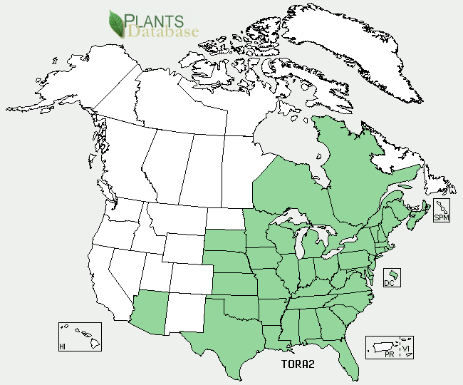
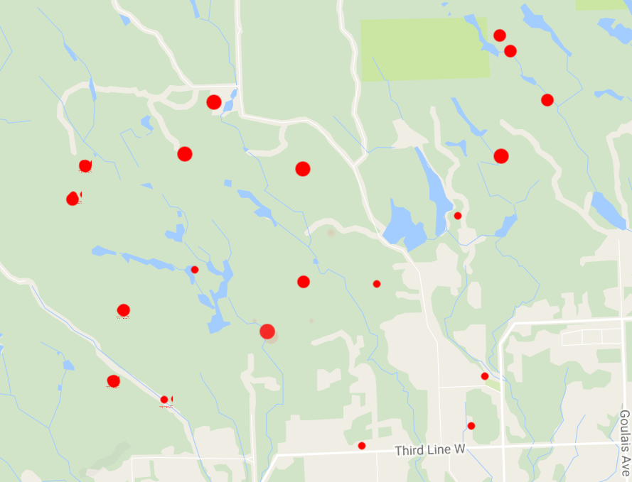

Poison Treatment
- If you know you have contacted Poison Ivy, wash the affected area with soap and water as soon as possible (within a few hours). This usually prevents any effects.
- Washing with Jewelweed juice is also very effective. Just grab some of the plant, and smush it onto the affected area. The stems are the juiciest.
- Black and White Birch leaf or spring growth tea does a fine job of allaying the itch and misery of poison ivy
- Rubbing alcohol is said to help with the rash.
- If a serious allergic reaction is developed, steroids must be administered.
Similar Species
Range Map

Previous Locations

More Plant Information
Family
Cashew family
Latin Name
Toxicodendron rydbergii
Flower Information
Green or Brown, 5 petals.
Height
Between 1 and 6 feet.
Native
Native
Status
Common
Fresh Poison Ivy leaves in May. They are the most potent at this time.
A closer look at the leaves. Note that the leaves are sometimes toothed and sometimes smooth-edged.
The leaves can vary a lot, as shown here....
Berries in September. They are white and hard.
The tree shown here has several Poison Ivy vines climbing it.
This shows the thread-like roots that hold Poison Ivy to the tree (or other support) that it climbs.
{kind=link}
{kind=link}
{kind=link}
{kind=link}
{kind=link}
{kind=link}
{kind=link}